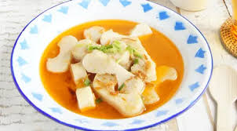

Sejarah Makanan Palembang

Makanan Palembang memiliki sejarah yang kaya dan berakar dalam
budaya Melayu dan pengaruh perdagangan di Sumatera Selatan. Pempek,
salah satu hidangan paling ikonik, berasal dari tradisi nelayan yang
mengolah ikan menjadi makanan yang tahan lama. Seiring waktu, pempek
berkembang menjadi simbol kuliner Palembang yang terkenal, disajikan
dengan kuah cuka khas. Makanan ini mencerminkan perpaduan budaya
lokal dan pengaruh Tionghoa, terlihat dari penggunaan bahan-bahan
seperti tepung tapioka. Hingga kini, makanan Palembang menjadi
bagian integral dari identitas daerah dan dikenali luas di
Indonesia.
Jenis Makanan Palembang

Makanan khas Palembang tidak hanya menggugah selera, tetapi juga
membawa kita pada perjalanan rasa yang unik. Dari ikonik pempek yang
kenyal hingga tekwan yang hangat dan menyegarkan, setiap jenis
makanan memiliki karakter dan cita rasa tersendiri. Mari kita
jelajahi berbagai hidangan yang tidak hanya memuaskan perut, tetapi
juga menghangatkan hati. Siap untuk menemukan kelezatan yang tak
terlupakan? Berikut adalah beberapa jenis makanan Palembang yang
wajib Anda coba!
Laksan

Laksan adalah salah satu hidangan khas Palembang yang terkenal
dengan kuah santan yang kental dan kaya rempah. Terbuat dari
pempek yang dipotong kecil-kecil dan disajikan dalam kuah
berbumbu, laksan memberikan perpaduan rasa yang lezat dan unik.
Hidangan ini biasanya dilengkapi dengan irisan timun, tauge, dan
taburan bawang goreng, menambah kesegaran dan kelezatan. Laksan
tidak hanya memanjakan lidah, tetapi juga mencerminkan kekayaan
kuliner Palembang yang menggugah selera. Sempurna dinikmati
bersama keluarga atau teman, laksan adalah pilihan tepat untuk
menikmati cita rasa autentik dari Sumatera Selatan.
Mie Celor

Mie Celor adalah salah satu hidangan khas Palembang yang terkenal
dengan kuah santan kental dan bumbu rempah yang kaya. Mie ini
terbuat dari mie telur yang kenyal dan disajikan dengan kuah yang
gurih, biasanya dilengkapi dengan potongan udang, daging ayam,
atau telur rebus. Mie Celor juga sering ditambahkan dengan tauge
segar, daun bawang, dan sambal untuk memberikan rasa pedas yang
nikmat. Hidangan ini tidak hanya menggugah selera, tetapi juga
mencerminkan kekayaan cita rasa kuliner Palembang yang unik. Mie
Celor sering dinikmati sebagai sarapan atau makan siang,
menjadikannya pilihan yang sempurna untuk menghangatkan perut dan
memberikan energi sepanjang hari.
Daftar Resep Makanan
Sebelum kita menjelajahi resep makanan khas Palembang yang menggugah
selera, mari kita ketahui bahwa setiap hidangan tidak hanya lezat,
tetapi juga kaya akan sejarah dan tradisi. Dari pempek yang kenyal
hingga mie celor yang gurih, setiap makanan menawarkan cita rasa
unik yang mencerminkan kekayaan kuliner daerah ini. Berikut adalah
beberapa resep mudah yang bisa Anda coba di rumah untuk merasakan
kelezatan kuliner Palembang. Selamat memasak!
| Nama Makanan |
Bahan Utama |
Langkah-langkah |
| Pempek |
500g ikan tenggiri, 250g tepung tapioka, 1 butir telur, 1 sdm
garam, air secukupnya
|
1. Haluskan ikan, campurkan dengan tepung, telur, dan
garam.
2. Bentuk adonan dan rebus hingga mengapung.
3.
Sajikan dengan kuah cuka.
|
| Tekwan |
300g ikan tenggiri, 100g soun, 50g tauge, 1 sdm bawang daun,
1.5L kaldu
|
1. Haluskan ikan, campurkan dengan soun yang direndam.
2.
Bentuk bola-bola kecil dan rebus dalam kaldu.
3. Sajikan
dengan tauge dan bawang daun.
|
| Laksan |
200g pempek, 300ml santan, bumbu (bawang merah, bawang putih,
cabai)
|
1. Tumis bumbu hingga harum, lalu tambahkan santan.
2.
Masukkan potongan pempek dan masak hingga kuah mengental.
3.
Sajikan hangat.
|
| Mie Celor |
200g mie telur, 200ml santan, 100g udang, bumbu (bawang merah,
merica)
|
1. Rebus mie hingga matang, tiriskan.
2. Tumis bumbu,
masukkan udang, lalu santan.
3. Campurkan mie dengan
kuah, sajikan panas.
|
| Pindang |
500g ikan patin, 1L air, bumbu (asam, cabai, bawang) |
1. Rebus air bersama bumbu hingga mendidih.
2. Masukkan
ikan patin dan masak hingga matang.
3. Sajikan dengan
nasi.
|
| Kemplang |
200g ikan, 100g tepung, garam secukupnya |
1. Haluskan ikan, campurkan dengan tepung dan garam.
2.
Bentuk adonan menjadi pipih.
3. Jemur hingga kering dan
goreng hingga renyah.
|
| Cendol |
200g cendol, 200ml santan, 100g gula merah |
1. Rebus gula merah dengan sedikit air hingga larut.
2.
Campurkan cendol dengan santan dan gula merah.
3. Sajikan
dingin.
|